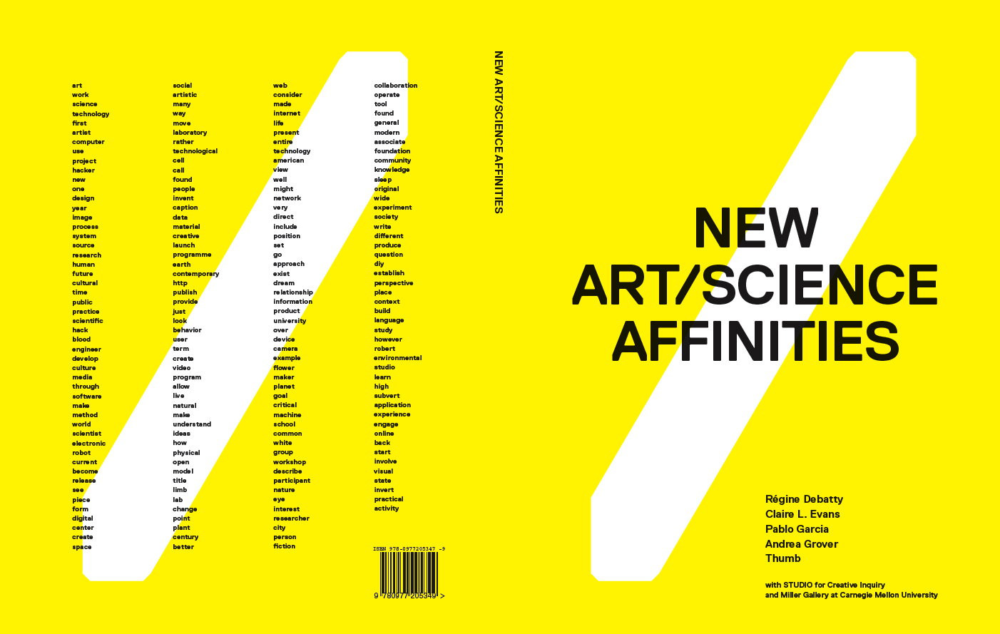

Book: NEW ART/SCIENCE AFFINITIES

Published by the CMU STUDIO for Creative Inquiry and the Miller Gallery, “NEW ART/SCIENCE AFFINITIES” is a new book created in a “book sprint” by some interesting thinkers on the intersection between art and science. I’m pleased to say that it features myself as well as a slew of people one should be honored to be in the company of. The free PDF option is a welcome gesture.
In their own words:
The Miller Gallery at Carnegie Mellon University and the STUDIO for Creative Inquiry have co-published “New Art/Science Affinities,” a 190-page book on contemporary artists that was written and designed in one week by four authors (Andrea Grover, Régine Debatty, Claire Evans and Pablo Garcia) and two designers (Luke Bulman and Jessica Young of Thumb).
“New Art/Science Affinities,” which focuses on artists working at the intersection of art, science and technology, was produced by a collaborative authoring process known as a “book sprint.” Derived from “code sprinting,” a method in which software developers gather in a single room to work intensely on an open source project for a certain period of time, the term book sprint describes the quick, collective writing of a topical book.
The book includes meditations, interviews, diagrams, letters and manifestos on maker culture, hacking, artist research, distributed creativity, and technological and speculative design. Chapters include Program Art or Be Programmed, Subvert! Citizen Science, Artists in White Coats and Latex Gloves, The Maker Moment and The Overview Effect.
Sixty international artists and art collaboratives are featured, including Agnes Meyer-Brandis, Atelier Van Lieshout, Brandon Ballengée, Free Art and Technology (F.A.T.), Rafael Lozano-Hemmer, The Institute for Figuring, Aaron Koblin, Machine Project, Openframeworks, C.E.B. Reas, Philip Ross, Tomás Saraceno, SymbioticA, Jer Thorp, and Marius Watz.</div>
[..]
“New Art/Science Affinities” (2011, 8.5x11 inches, 190 pages, perfect-bound paperback, 232 full-color illustrations) is available for purchase ($45.75) through print-on-demand service Lulu, or for free download via the Miller Gallery website (http://www.cmu.edu/millergallery/nasabook).